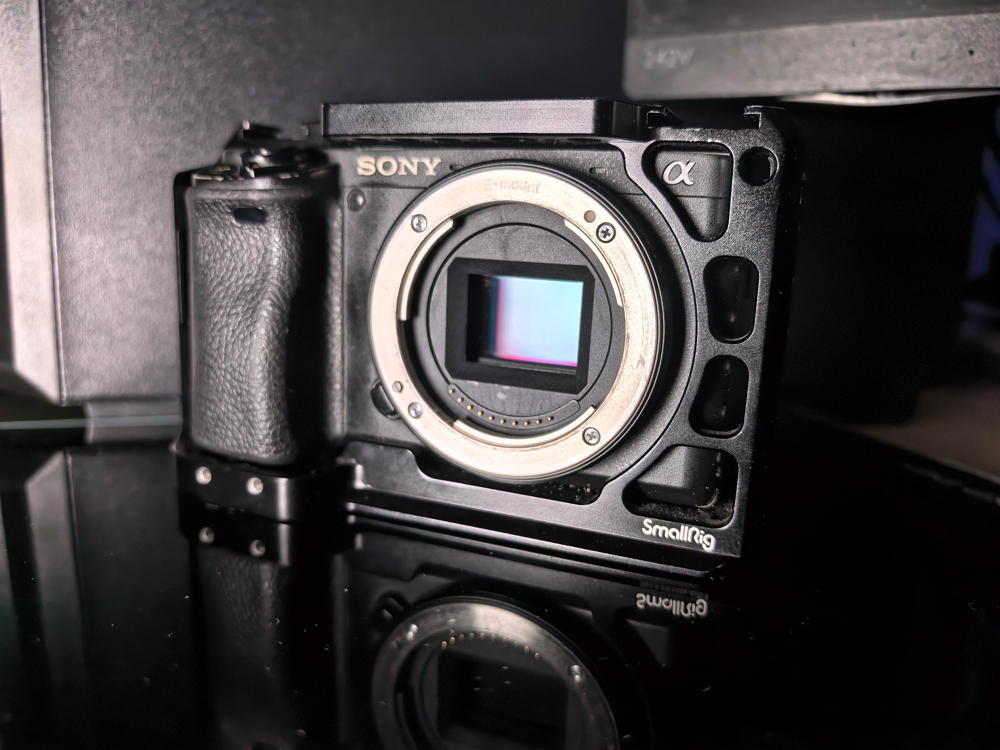
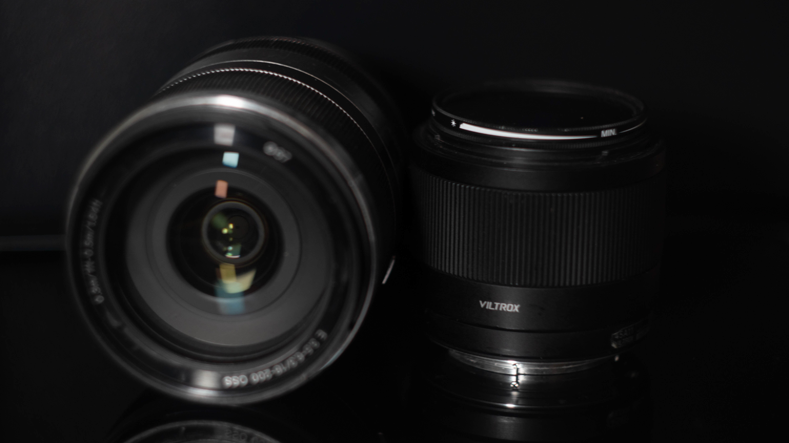
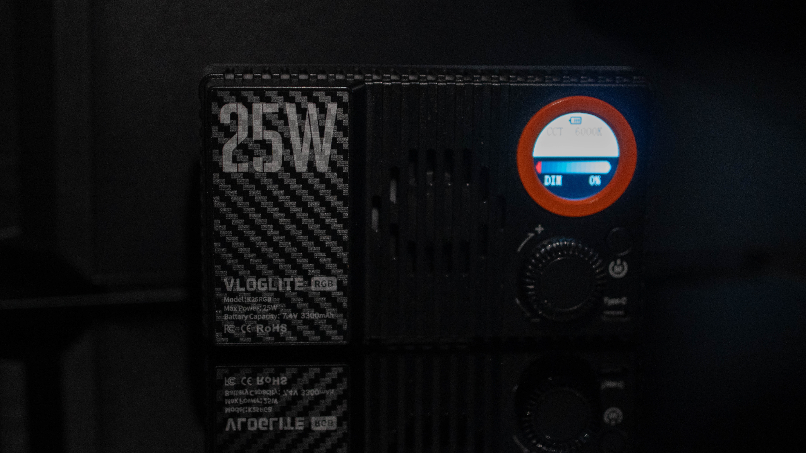

Камеры
- Основная камера: Sony Alpha 6400
- Запасная камера: Canon EOS 600D
Снимаю более 2 лет. Начинал со старенького Nikon и фотографии пейзажей и архитектуры.
Готов помочь вам в фото и видео съемке вашего мероприятия или вас самих.
В портфолио собраны лучшие кадры. Остальные фотографии со съёмок лежат в облаке: откройте нужную папку, чтобы посмотреть или скачать снимки.
Съёмки и сотрудничество. Напишите, и я отвечу в течение дня.
Мой Телеграмм: @kipterun

